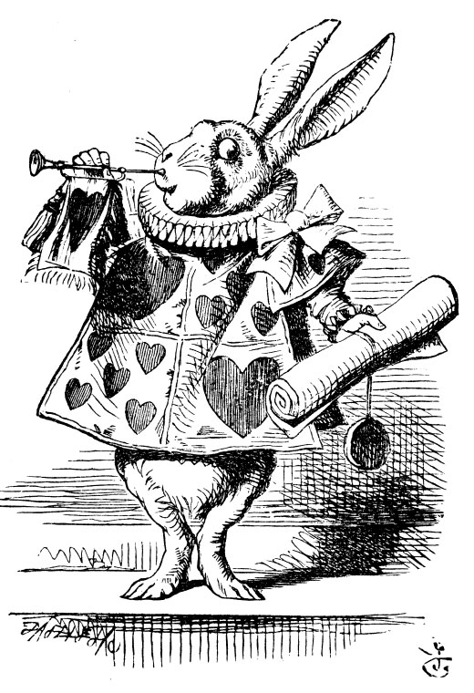
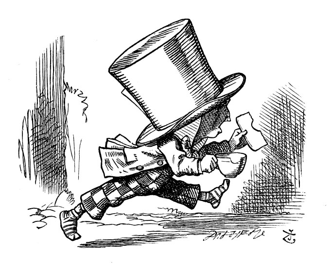

Mahkeme salonuna vardıklarında, Kupa Kralı ve Kraliçesi’nin tahtlarına kurulup oturduklarını gördüler; bütün iskambil kâğıtlarıyla beraber binbir çeşit minik kuş ve yabani hayvandan oluşan büyük bir kalabalık etraflarını sarmıştı: Önlerinde zincire vurulmuş bir halde her iki yanında birer muhafızla Kupa Valesi duruyordu; Kra-Pın yanında da bir elinde borazanı, diğer elinde bir tomar parşömen kâğıdıyla Beyaz Tavşan yer alıyordu. Mahkemenin tam ortasında üzerinde kocaman bir tabak dolusu tatlı çöreğin olduğu bir masa vardı: çörekler o kadar leziz görünüyorlardı ki, onlara bakarken Alice’in ağzı sulandı, “Keşke şu duruşma çabuk bitse de ikram saati gelse!” diye düşündü Alice; ama pek öyle olacak gibi gözükmüyordu, böylece zaman geçsin diye etrafına bakınmaya başladı.
Alice daha önce hayatında hiç mahkeme görmemişti, ama kitaplardan okumuştu ve buradaki nerdeyse her şeyin adını bilmekten çok hoşnuttu. “Bu hâkim,” dedi kendi kendine, “kocaman peruğundan belli.”
Bu arada yeri gelmişken hâkim Kral’dı; tacını peruğu üzerine taktığından (bunu nasıl yaptığını görmek istiyorsanız, kitabın başındaki resme bakın), halinden pek öyle rahatmış gibi görünmüyordu, yakışmadığı da kesindi.

“İşte bu da jüri locası,” diye geçirdi aklından Alice, “şu on iki ‘yaratık’ da (jüri üyelerinin kimileri hayvan, kimileri de kuş olduğundan, bunlara ‘yaratık’ demek zorunda kalmıştı), galiba jüri üyesi.” Bu son sözcükleri, kendinden son derece gurur duyarak birkaç kez yineledi; buna hakkı da vardı hani, kendi yaşıtı küçük kızlardan kaç tanesi bunların anlamını biliyordu. Hem, ‘jüriciler’ dese bile bir şey fark etmezdi.
On iki jüri üyesi taş tahtalar üzerine durmadan bir şeyler yazıyordu. “Bunlar ne yazıyor böyle?” diye fısıldadı Alice Crifon’a. “Daha duruşma başlamadı ki, bir şey yazsınlar.”
“İsimlerini,” diye fısıldadı Grifon Alice’in kulağına, “duruşma bitmeden isimlerini unutmaktan korkuyorlar.”
Alice “Aptal şeyler!” diye sinirlenerek yüksek sesle söylenmeye başlamıştı ki, Beyaz Tavşan, “Mahkemede sessizlik!” diye bağırdı; bunun üzerine hemencecik susuverdi; Kral da gözlüklerini takarak kim konuşuyor diye merakla etrafına bakındı.
Alice, jüri üyelerinin omuzları üzerinden bakıyormuş gibi, üyelerin hepsinin tahtalarına “aptal şeyler!” diye yazmakta olduklarını görebiliyordu; hattâ içlerinden birinin ‘aptal’ sözcüğünün nasıl yazıldığını bilmeyip, yanındakine sorduğu da gözünden kaçmamıştı. “Daha duruşma bitmeden tahtaları karman çorman olacak!” diye düşündü.
Jüri üyelerinden birinde gıcırdayarak yazan bir kalem vardı; tabii ki Alice bu sese hiç dayanamıyordu; mahkemeyi dolaşıp, üyenin tam arkasına geçerek, bir yolunu bulup kalemi elinden kapıverdi; bunu öyle hızlıca yaptı ki, zavallı jüri üyesi (O da Kertenkele Bili idi) kalemine ne olduğunu bir türlü anlayamadı; her tarafı arayıp tarayıp da bulamayınca bir parmağıyla yazmaya devam etmek zorunda kaldı; tabii ki bu şekilde yazması taş tahtada iz bırakmadığından pek yararlı olmadı.
“Mübaşir, suçlamayı oku!” dedi Kral.
Bunun üzerine, Beyaz Tavşan üç kez borazanını öttürüp elindeki parşömen kâğıdından şunları okudu...
“Kupa Kraliçesi tatlı çörekler yaptı
Bir yaz günüydü
Kupa Valesi çörekleri çaldı
Çok uzaklara götürdü!”
“Kararınızı verin,” dedi Kral jüriye.
“Daha değil, daha değil!” diye müdahale etti Tavşan telaşla.
“Bundan önce daha yapılacak çok iş var!”
“İlk tanığı çağırın,” dedi Kral; Beyaz Tavşan borazanını üç kez öttürüp, “ilk tanık!” diye bağırdı.
İlk tanık Şapkacı idi. Bir elinde çay fincanı, öbür elinde tereyağlı ekmeği ile içeri girdi. “Majesteleri, bunlarla içeri girdiğim için çok özür dilerim,” diye söze başladı. “Buraya çağrıldığımda daha çayımı bitirmemiştim de.”
“Çoktan bitirmen gerekirdi,” dedi Kral. “Ne zaman başladın?”
Şapkacı, kendisini mahkemeye kadar takip eden ve Fındık Fare-si’yle kol kola duran Mart Tavşam’na baktı. “Martın on dördü olsa gerekti,” dedi.
“On beşi,” dedi Mart Tavşanı.
“On altısıydı,” diye ekledi Fındık Faresi.
“Bunları yazın,” dedi Kral jüriye, jüri de bu üç tarihi hararetle taştahtalara yazıp toplayarak sonucu şilin ve peniye çevirdiler.
“Şapkanı çıkar,” dedi Kral Şapkacı’ya-
“Benim değil ki,” dedi Şapkacı.
“Çalıntı!” diye haykırdı Kral jüriye dönerek, onlar da bu gerçeği derhal kayda geçirdiler.
“Bunlar satmak için,” diye açıklama yaptı Şapkacı. “Hiçbirisi benim değil ki. Ben bir şapkacıyım.”
İşte tam o anda Kraliçe gözlüklerini taktı ve korkudan sapsarı kesilip yerinde kıpır kıpır eden Şapkacı’ya fena halde dik dik bakmaya başladı.
“Bildiklerini anlat,” dedi Kral, “ve böyle heyecanlanıp durma, yoksa derhal idam ettiririm seni”
Bu sözler tanığın yüreğine hiç de su serpmemişti; tedirgin tedirgin Kraliçe’ye bakıyor, sürekli ayak değiştiriyordu ve şaşkınlıktan, tereyağlı ekmeği ısıracağına çay fincanından kocaman bir parça dişleyiverdi.
Tam bu sırada Alice kendinde bir tuhaflık hissetti; ne olduğunu anlayıncaya değin epey bir afalladı. Yeniden büyümeye başlıyordu; ilk önce kalkıp mahkemeyi terk etmeyi geçirdi aklından, ama sonra sığabildiği sürece kalmaya karar verdi.
“Beni böyle sıkıştırmasan,” dedi yanında oturan Fındık Faresi. “Baksana, nefes alamıyorum.”
“Elimde değil,” dedi Alice mahcup bir şekilde. “Büyüyorum.”
“Burada büyümeye hakkın yok,” dedi Fındık Faresi.
“Saçmalama,” dedi Alice cesareti yerine gelerek. “Sen de büyüyorsun işte.”
“Evet, ama normal ölçülerde büyüyorum, senin gibi böyle acayip bir şekilde değil,” dedi Fındık Faresi. Sonra suratını asarak, kalkıp mahkemenin öbür tarafına geçti.
Bütün bunlar olup bitedursun, bu arada Kraliçe de gözünü Şapkacıdan hiç ayırmamıştı; Fındık Faresi’nin mahkemenin öbür tarafına geçtiği sırada, Kraliçe mahkemedeki görevlilerden birine seslenerek, “Son konserdeki şarkıcıların listesini getir bana!” dedi. Bunun üzerine biçare Şapkacı’yı öyle bir titreme tuttu ki, ayakkabıları ayağından fırlayıverdi.
“Bildiklerini anlat,” dedi Kral öfkeli öfkeli, “yoksa seni idama mahkum edeceğim, heyecanın hiç umurumda değil.”
“Ben zavallı yoksul bir adamım, Majesteleri,” diye sözlerine başladı, Şapkacı titrek bir sesle. “... Çaya daha yeni başlamıştım... bir hafta ya olmuş ya olmamıştı... hem tereyağlı ekmek azalmaya başladığından hem de çay tepsisi gibisin parla-”
“Çay tepsisi gibi ne?” diye sordu Kral.
“Çayla başladı,” dedi Şapkacı.
“Cümlenin öyle başladığım duydum!” dedi Kral sert bir şekilde. “Sen beni ahmak yerine mi koyuyorsun? Devam et!”
“Ben zavallı yoksul bir adamım,” diye devam etti Şapkacı, “ondan sonra artık her şey parlar oldu... yalnız Mart Tavşanı dedi ki...”
“Demedim,” diye lafa karıştı Mart Tavşanı aceleyle.
“Reddediyorum!” dedi Mart Tavşanı.
“Reddediyor,” dedi Kral, “bu kısmı göz önünde bulundurmayın.”
“Neyse, Fındık Faresi dedi ki...” diye devam ederken Şapkacı, acaba o da reddedecek mi diye dönüp etrafına kaygıyla baktı; ne ki Fındık Faresi derin uykuda olduğundan hiçbir şeyi reddetmedi.
“Bundan sonra,” diye devam etti Şapkacı, “biraz daha tereyağlı ekmek kestim...”
“Fındık Faresi ne demişti?” diye sordu jüriden birileri.
“İşte onu hatırlamıyorum,” dedi Şapkacı.
“Hatırlamalısın,” diye uyardı Kral, “yoksa idama mahkum olursun.”
Biçare Şapkacı, çay fincanını ve tereyağlı ekmeğini korkudan elinden yere düşürdü, sonra da diz çöküp, “Ben zavallı yoksul bir adamım, Majesteleri,” dedi.
“Sen, çok zavallı bir konuşmacısın,” dedi Kral.
İşte bu sırada kobaylardan biri bir alkıştır tutturdu, ama mahkeme görevlileri tarafından derhal bastırıldı. (Bu, anlaşılması oldukça zor bir sözcük olduğundan, size bunun nasıl yapıldığını anlatayım. Ağzı kalın bir iple bağlanan branda bezinden kocaman bir torbaları vardı; kobayları baş aşağı bu torbanın içine soktular, sonra da üzerine bir güzel oturdular.)
“İşte, bak bunu gördüğüme sevindim,” diye düşündü Alice. “Gazetelerde hep okuyorum, ‘Duruşmanın sonunda alkışlamaya kalkışanlar oldu, mahkeme görevlileri tarafından derhal bastırıldılar,’ diye yazıyorlar. Bunun ne demek olduğunu şimdiye kadar bir türlü anlayamamıştım.”
“Bildiklerinin hepsi bu kadarsa, o zaman aşağıya in,” diye devam etti Kral.
“Bundan daha aşağıya inemem,” dedi, Şapkacı, “zaten yerdeyim.”
“O zaman oturabilirsin,” diye karşılık verdi Kral.
Bu sırada bir başka kobay alkışlamaya başladı ve tabii ki hemen bastırıldı.

“Ha! İşte kobayların işi tamam!” diye düşündü Alice. “Şimdi artık her şey yoluna girecek.”
Şapkacı, şarkıcıların listesini okuyan Kraliçe’ye dönüp tedirgin tedirgin bakarken, “Çayımı bitirseydim,” dedi.
“Gidebilirsin,” dedi Kral; bunun üzerine Şapkacı, ayakkabılarını bile giymeden aceleyle mahkemeden ayrıldı.
“... dışarıda uçurun kellesini,” dedi Kraliçe askerlerden birine, ne var ki, daha asker kapıya varmadan, Şapkacı çoktan sırra kadem basmıştı.
“Bir sonraki tanık!” dedi Kral.
Bir sonraki tanık Düşes’in aşçısıydı. Elinde biber kutusu vardı; Alice, o daha mahkemeden içeri girmeden, kapının yanındakilerin bir anda hapşırmaya başlamasından, gelenin kim olduğunu tahmin etmişti.
“Bildiklerini anlat,” dedi Kral.
“Anlatmayacağım.”
Kral, ne yapacağını bilmemenin verdiği endişeli bir yüz ifadesiyle Beyaz Tavşan’a baktı, o da alçak sesle Kral’a, “Majesteleri, bu tanığı siz sorguya çekmelisiniz,” dedi.
“Ne yapalım, gerekiyorsa yaparız,” dedi Kral üzgün üzgün, sonra kollarını kavuşturdu, gözlerini kısıp kaşlarını çatarak boğuk bir ses tonuyla, “Çörek neden yapılır?” diye sordu.
“Çoğunlukla biberden,” dedi aşçı.
“Şeker pekmezinden,” dedi arkadan gelen uykulu bir ses.
“Şu Fındık Faresi’ni yakalayın,” diye bir çığlık kopardı Kraliçe. “Kesin kellesini! Atın mahkemeden dışarı! Bastırın! Çimdikleyin! Yolun bıyıklarını!”
Fındık Faresi’ni dışarı atma sırasında bir kargaşadır sürüp gitti, yeniden yerlerine oturduklarında da aşçı çoktan ortadan kaybolmuştu.
“Boş verin,” dedi Kral, çok rahatlamış bir şekilde. “Sonraki tanığı çağırın.” Kraliçe’ye dönüp alçak sesle, “Hayatım, bunu da sen sorguya çekiver. Başıma ağrılar girdi!” dedi.
Alice bir yandan Beyaz Tavşan’ın beceriksizce listeyi gözden geçirişine bakarken, bir sonraki tanığın nasıl bir şey olduğunu çok merak ediyordu. “Ne de olsa, daha doğru dürüst ifade veren çıkmadı,” dedi kendi kendine. Beyaz Tavşan’ın ağzından kulakları yırtan tiz bir sesle ‘Alice’ ismi çıktığı anda, artık ondaki şaşkınlığı varın siz hayal edin.